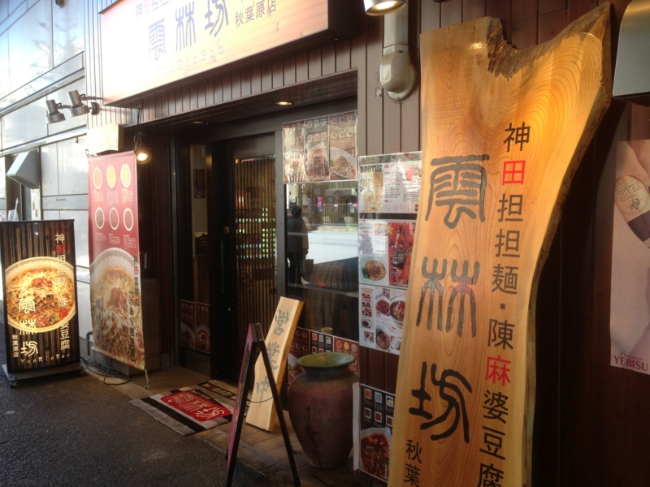
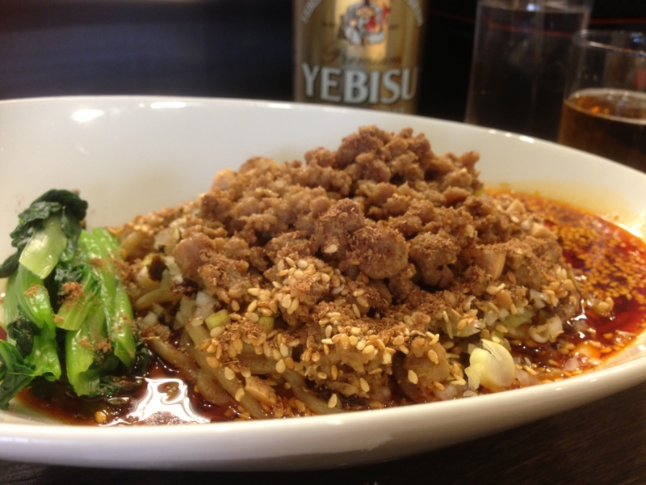
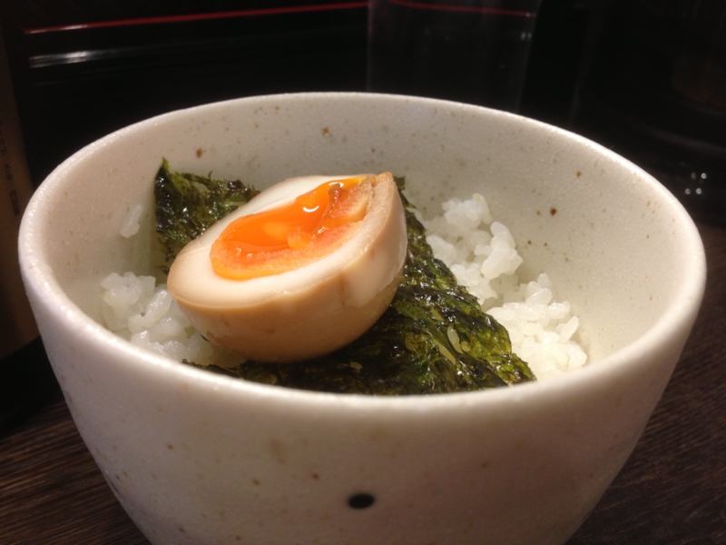
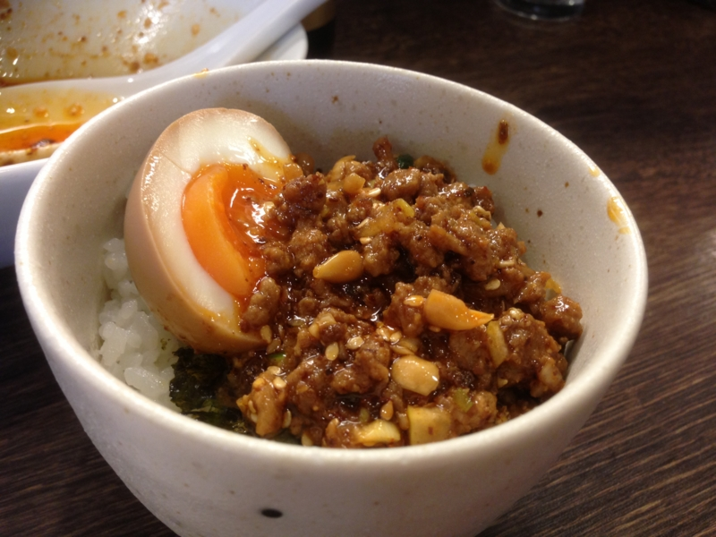

神田担々麺・陳麻婆豆腐「雲林坊 秋葉原店」
公開日：

『ダイ・ハード/ラスト・デイ』 - だるろぐ を観た後に突撃。事前に @shibayan が偵察した情報によると、結構おいしいらしい。

まずは汁なし担々麺、激辛で一丁！ お味のほうはかなり本格派。山椒がバリバリ効いて、舌がビリビリする。これはかなりイケると思う。

隣で @subsfn が食ってたマーボー丼もイイ感じ。これはサイドメニュー扱いだけど、これだけガッツリ食べたい気もする。まぁ、ラーメン屋に要求すべきことではないけど。
完食！ でも、少し残った具が勿体ない……。そこで、

ご飯（中）を追加注文し……（味玉と韓国ノリはサービスでついてくる）

ぶっかけて食ったった！ ちょっと邪道な感じ*1だけれど、これはこれで旨い。@subsfn なんかはマーボー丼とこの食べ方で、ご飯を二杯も食ってた。
ごちそうさまでした！
*1:お店推奨の食べ方らしいんだけど